Fondatrice de Mouysset Studio
Le geste explore quand la pensée tourne en rond.
Je ne suis pas artiste en tant que scientifique. Je suis artiste parce que mon geste déverrouille ma pensée. Chaque série naît d'un problème que je vis, dans ma vie professionnelle ou personnelle. La broderie me permet de l'aborder par le corps plutôt que par la pensée, et finalement de le traverser.
Directrice de recherche au CNRS, je travaille depuis quinze ans sur la crise de la biodiversité à l'interface de l'écologie, de l'économie et de la philosophie. Un jour, mon regard de chercheuse n'arrivait plus à se renouveler. Alors j'ai brodé. Des insectes dorés sur des portraits chinés. Et le déblocage est venu. De la main, pas de la tête. En savoir plus sur mon activité scientifique →
Le processus est entièrement artisanal. Croquis, esquisse à l'échelle, choix de la photo dans mon stock, poinçonnage trou par trou, puis broderie. Chaque œuvre est une pièce unique. De la conception à la production, tout est long et rien n'est parfait. C'est le moyen que j'ai trouvé pour me reconnecter à un espace-temps plus humain, à contre-pied de mon activité de chercheuse globalisée et surconnectée.
Par l'usage de photos chinées et la lenteur obstinée du geste, ma démarche s'inscrit dans le courant du slow art : le recyclage d'œuvres existantes, la valorisation de l'artisanat. Une démarche qui me permet de rester cohérente avec des valeurs écologiques, que je porte aussi dans ma recherche scientifique sur la crise de la biodiversité.
Un fil rouge traverse toutes mes séries : la cohabitation. Cohabitation entre les humains, avec les non-humains, avec nos morts, avec nos traumas. Comment faire coexister ce qui semble inconciliable ? Comment habiter ensemble un monde pluriel ? C'est cette question qui sous-tend chacune de mes explorations, qu'elles soient scientifiques ou artistiques.
Ma broderie me permet de faire de la visualisation des données que l'on ne voit plus ou mal dans nos vies, dans nos sociétés, dans nos relations. Je propose un traitement épuré et graphique afin de capturer le cœur de ces données.
Je me place à contre-courant des initiatives art-science. Dans la plupart d'entre elles, la connaissance scientifique fournit la matière, et l'art la met en forme. Ici, c'est l'inverse : c'est la pratique artistique qui renouvelle ma recherche, qui lui ouvre des portes que l'exploration strictement intellectuelle n'arrivait pas à voir.
Cette exploration se prolonge dans mes objets numériques. Ma recherche scientifique théorise des concepts. Ma broderie explore les données par le geste. Mes objets numériques ouvrent une interface avec le public.
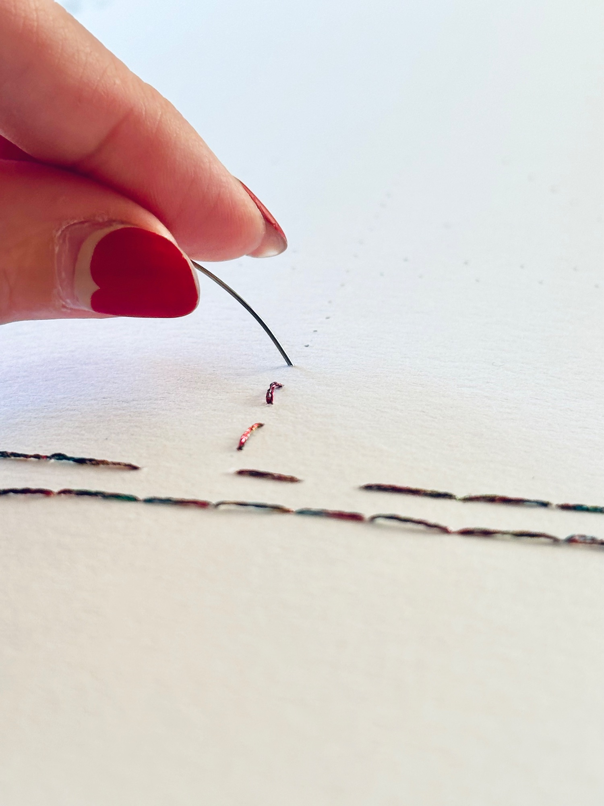
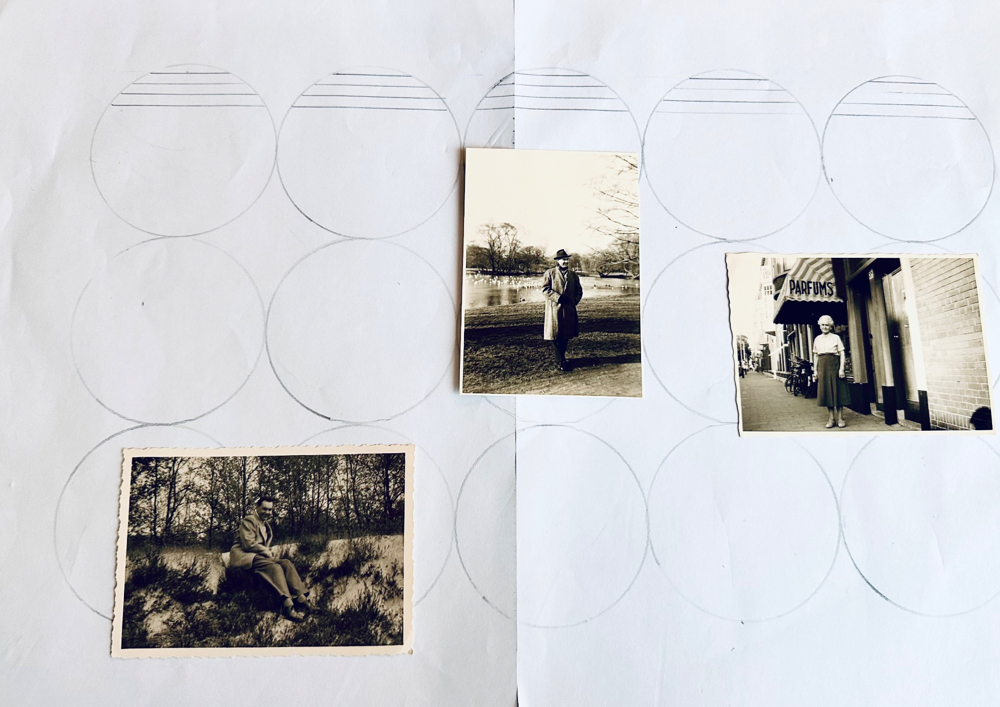
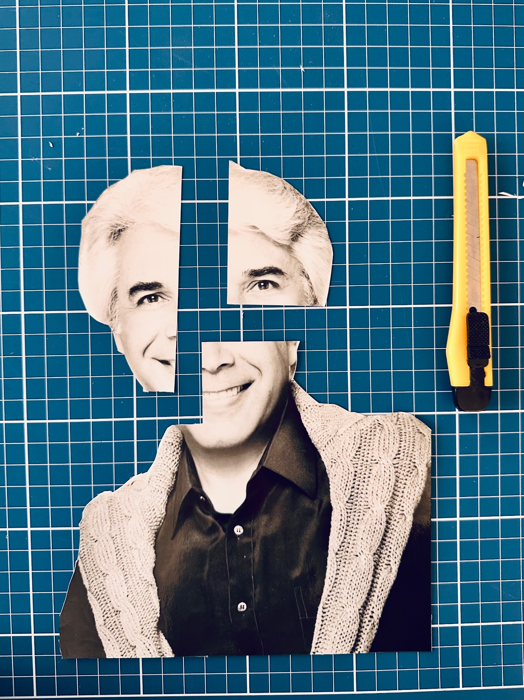
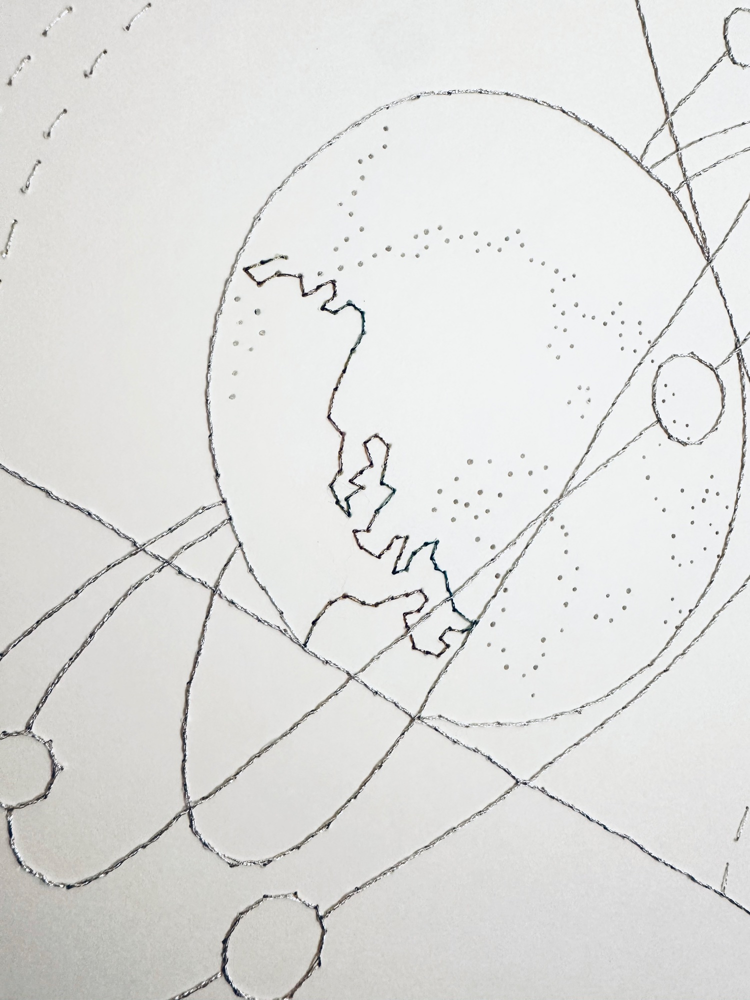
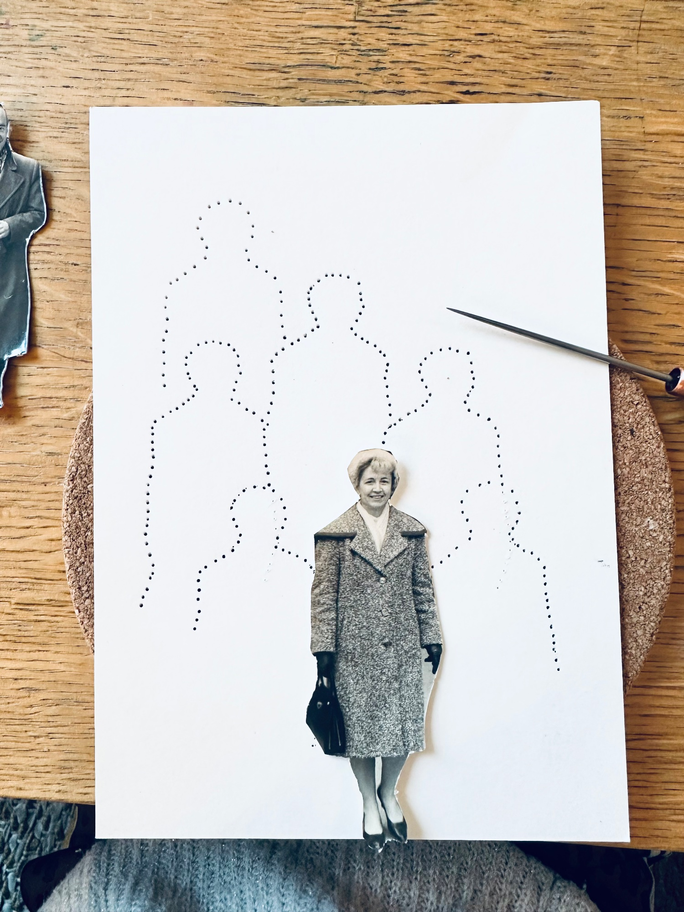
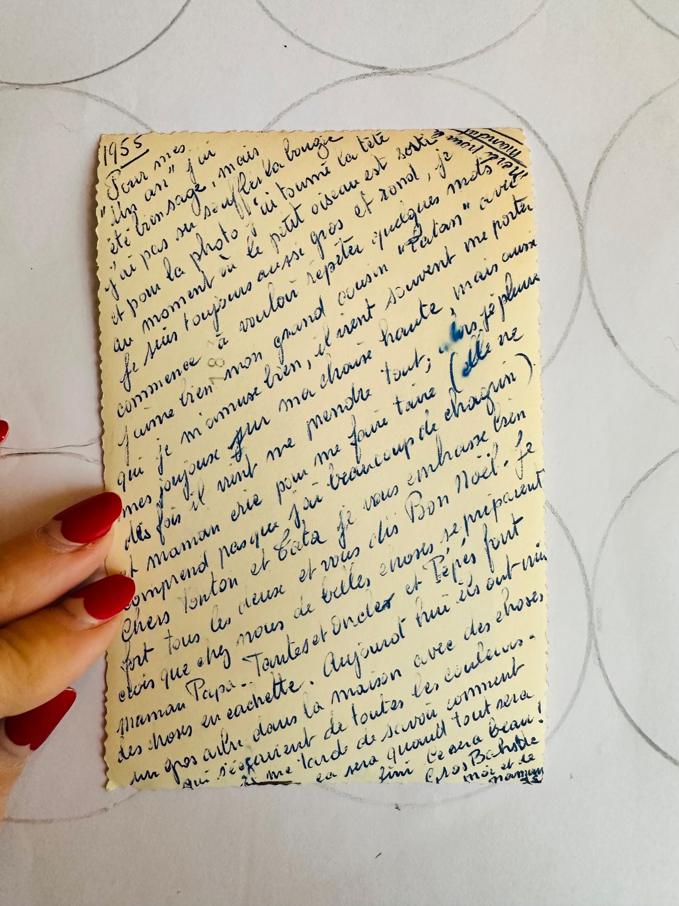
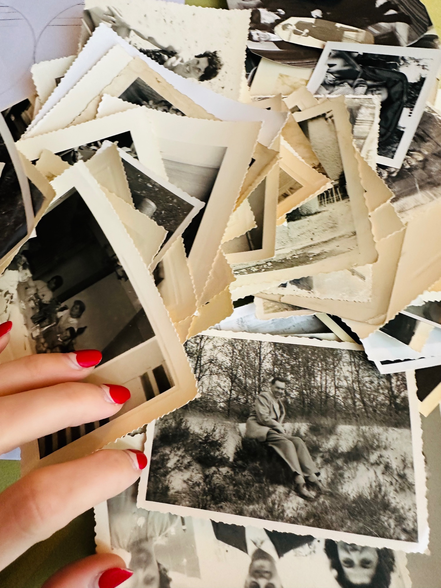
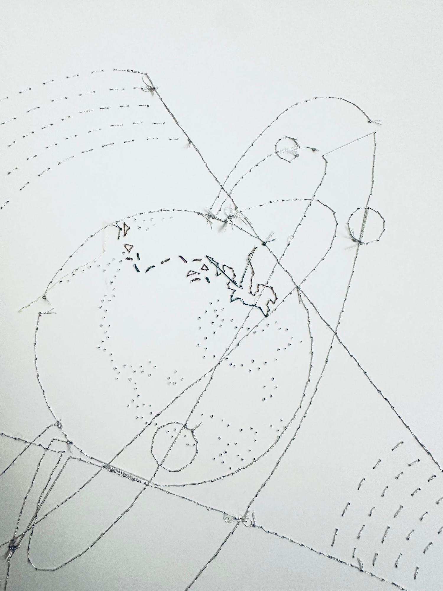
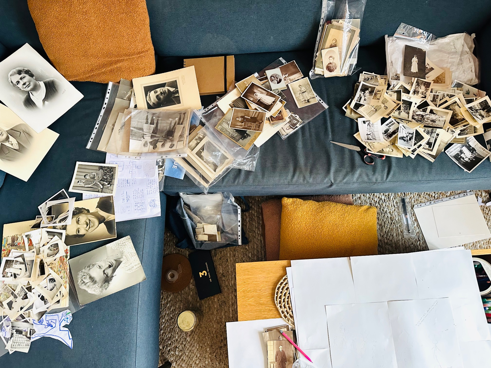
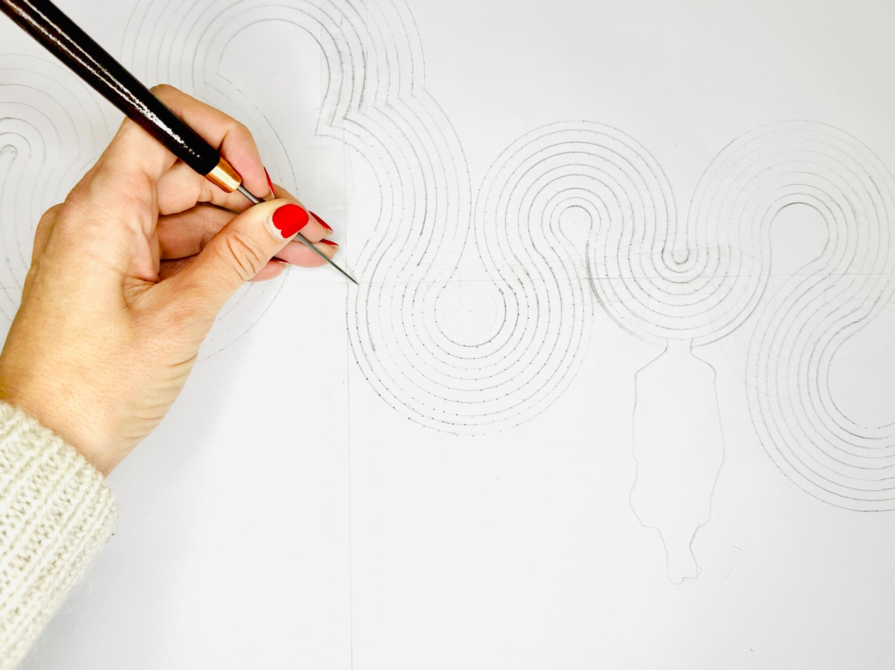
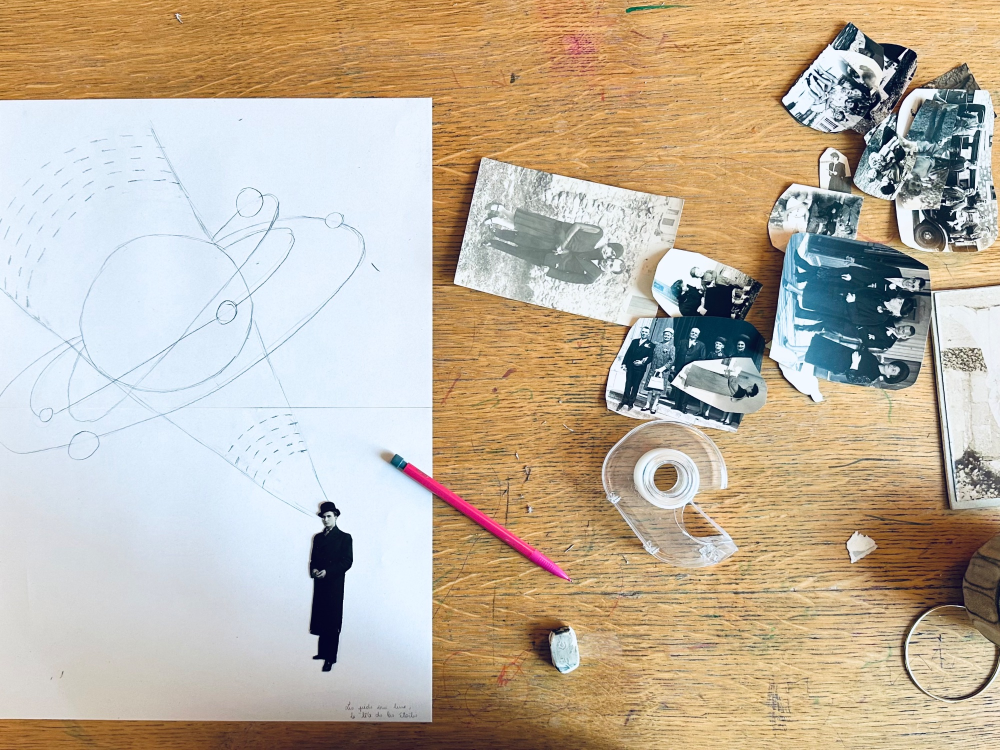
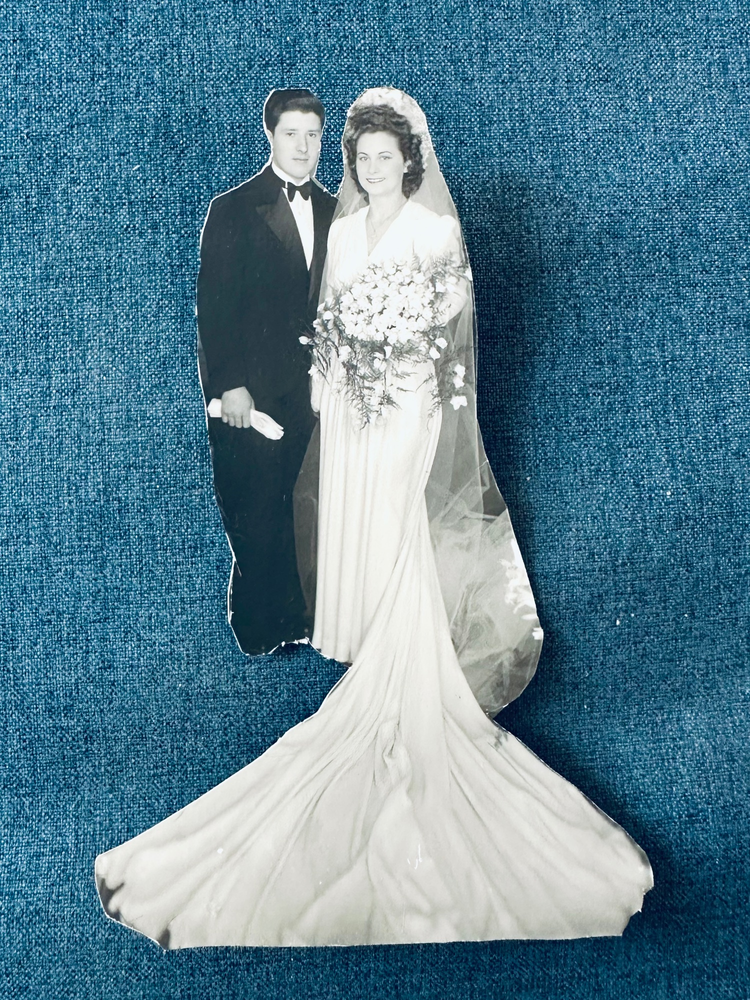